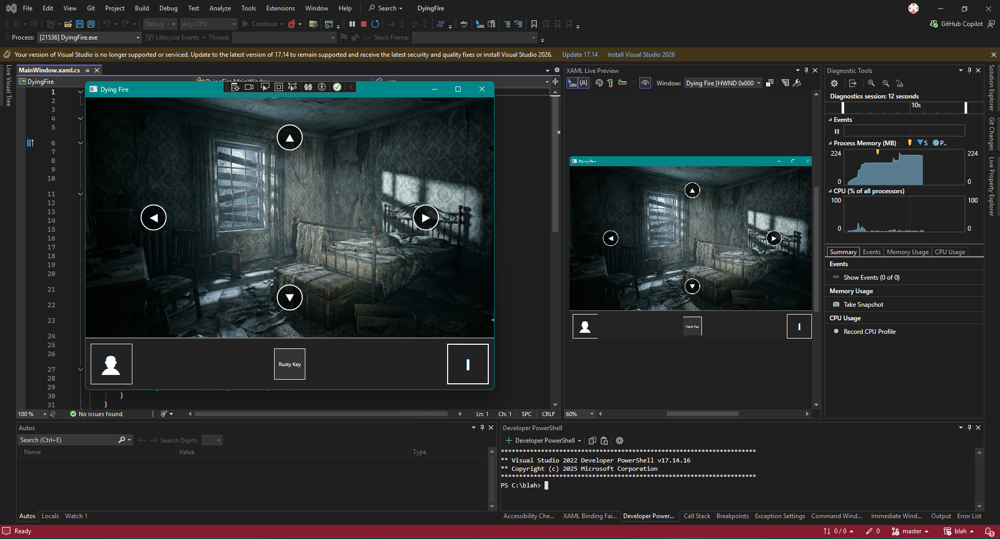
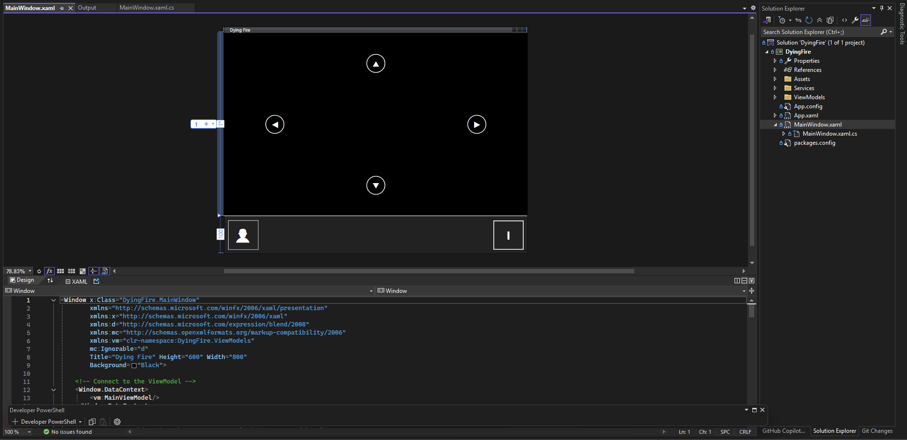
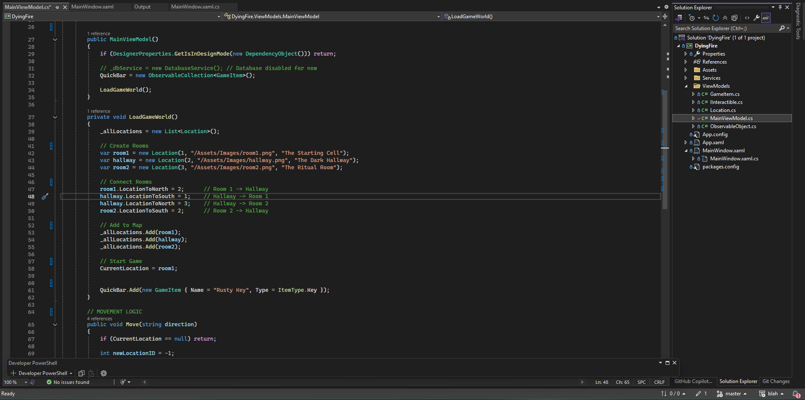
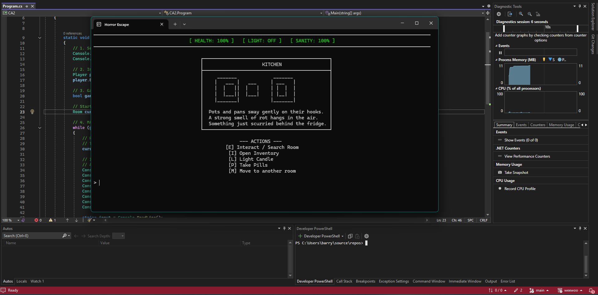
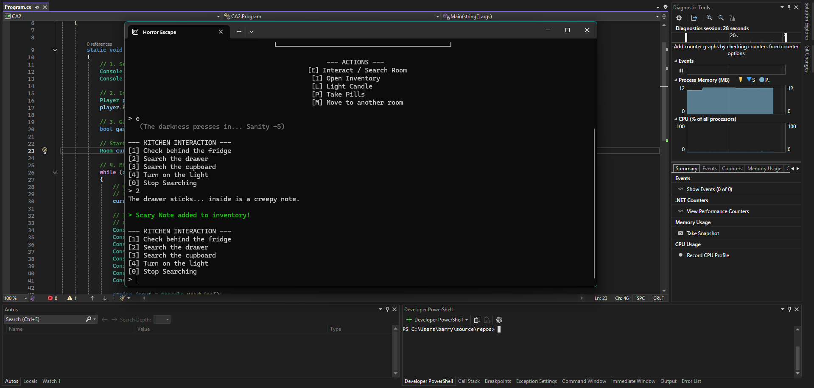
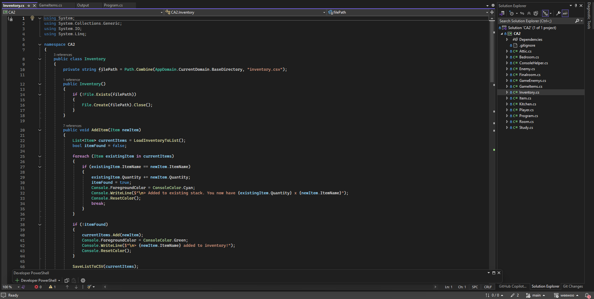

Pale Roots
Award-Winning AI: Engineered a custom Stack-Based Finite State Machine and dynamic targeting algorithms, winning the EA-sponsored "Best Use of AI" at Games Fleadh 2026.
Engine Architecture: Built the engine systems from the ground up rather than using a commercial engine, utilizing an Event-Driven architecture to decouple combat logic from UI.
Systems Design: Implemented continuous momentum physics and data-driven procedural generation for massive 60x34 tile arenas entirely in C#.
Engine Architecture & Optimization
Memory Management: Utilized Addressables for asynchronous asset loading and implemented robust Object Pooling to eliminate Garbage Collection spikes during high-volume entity spawning.
Rendering Optimization: Configured GPU Instancing for dynamic objects and baked Umbra Occlusion Culling for static environments, drastically reducing draw calls and triangle counts.
Systems Architecture: Designed a decoupled, Event-Driven UI using ScriptableObjects as data channels, adhering to strict MVC principles to prevent tight coupling between gameplay logic and the UI layer.
Gameplay Systems & AI
AI & Zero-GC Detection: Engineered a dynamic Finite State Machine where enemies react intelligently to the environment—investigating distant light disturbances or becoming stunned by direct hits. Optimized the targeting loop using Physics.OverlapSphereNonAlloc to guarantee zero Garbage Collection spikes.
Asynchronous Mechanics: Developed a camera flash tool that casts rays and calculates distance ratios to spawn fading "Burn Nodes" on geometry. Managed these interactive lights via an Object Pool and utilized modern C# async/await for highly performant, non-blocking light decay.
Arcade Physics & Combat: Built a custom rigidbody vehicle controller featuring dynamic drift mechanics using vector dot products and counter-friction. Integrated a Factory Pattern to pool and fire car projectiles, relying strictly on Interfaces (IDamageable) for scalable, decoupled hit detection.




Dying Fire
Architecture: Utilized a robust OOP class hierarchy to manage entities, employing Polymorphism and Inheritance to distinguish between Player, Enemy, and Interactive Objects.
Inventory System: Built a dynamic inventory management system using ObservableCollections and LINQ queries for real-time sorting and filtering.
Data Persistence: Implemented JSON parsing for complex dialogue trees and SQL database integration to persist player stats and progression.
Game Logic: Developed a Finite State Machine (FSM) to handle the transition between the "Investigation Phase" (Point-and-Click) and "Descent Phase" (Turn-Based Combat).




House Of History
Pure Logic & OOP: Built entirely as a standard Console Application to focus strictly on Object-Oriented Programming principles and C# syntax.
Creative Constraints: Challenged myself to create atmosphere and tension using only text parsing and pacing, requiring robust input validation and state management.
Narrative Design: Structured a non-linear narrative path that reacts to user input within the command line interface.
About Me
My obsession with games goes beyond playing; it is about understanding the mechanics that create immersion. From the narrative depth of Red Dead Redemption 2 to the punishing precision of Dark Souls, I study how systems combine to create emotional impact.
My Ambition: My goal is to become a Game Director capable of understanding every element of the pipeline—from Art to UI to Core Architecture. I believe every morsel of a game must be deliberate.
Why Hire Me: I balance my Second Year studies (on track for First Class Honours) with a management role in a high-volume bar. This has forged a work ethic and leadership ability that I apply directly to development. I have pushed myself to build custom engines and complex systems to ensure I am as technically capable as any graduate.
I am seeking an internship opportunity to prove my value. I just need a foot in the door; I will do the rest.